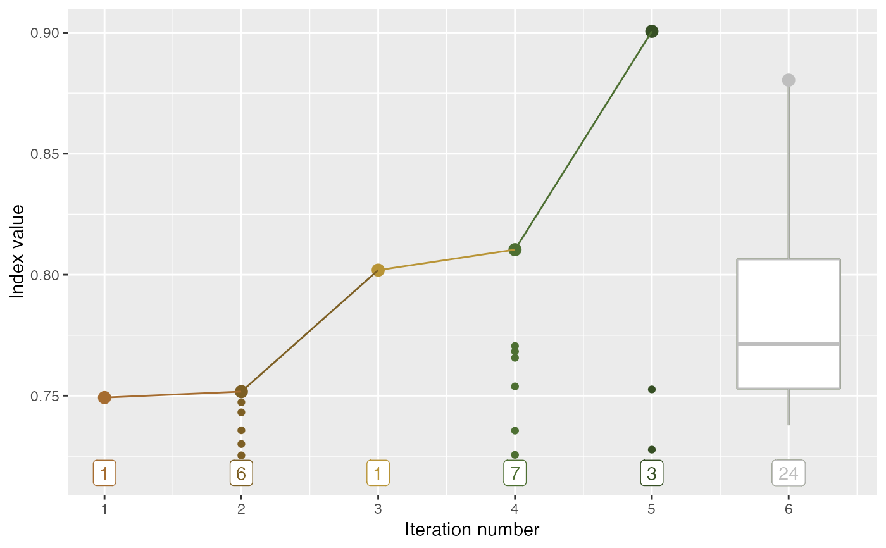

Plot the count in each iteration
explore_trace_search(
dt,
iter = NULL,
color = NULL,
cutoff = 15,
extend_lower = 0.95,
...
)a data object collected by the projection pursuit guided tour optimisation in tourr
the variable to be plotted on the x-axis
the variable to be coloured by
numeric; if the number of searches in one iteration is smaller than cutoff, a point geom, rather than boxplot geom, will be used.
a numeric for extending the y-axis to display text labels
arguments passed into geom_label_repel() for displaying text labels
a ggplot object for diagnosing how many points the optimiser(s) have searched
Other main plot functions:
explore_space_start(),
explore_space_tour(),
explore_trace_interp()
# Summary plots for search points in two algorithms
library(patchwork)
library(dplyr)
#>
#> Attaching package: ‘dplyr’
#> The following objects are masked from ‘package:stats’:
#>
#> filter, lag
#> The following objects are masked from ‘package:base’:
#>
#> intersect, setdiff, setequal, union
library(ggplot2)
p1 <- holes_1d_better %>% explore_trace_search() +
scale_color_continuous_botanical(palette = "fern")
#> map tries to the x-axis
#> map tries to color
p2 <- holes_2d_better_max_tries %>% explore_trace_search() +
scale_color_continuous_botanical(palette = "daisy")
#> map tries to the x-axis
#> map tries to color
p1 / p2
#> Warning: Removed 5 rows containing missing values or values outside the scale range
#> (`geom_label_repel()`).
#> Warning: Removed 1 row containing missing values or values outside the scale range
#> (`geom_label_repel()`).
#> Warning: Removed 8 rows containing missing values or values outside the scale range
#> (`geom_label_repel()`).
#> Warning: Removed 1 row containing missing values or values outside the scale range
#> (`geom_label_repel()`).
